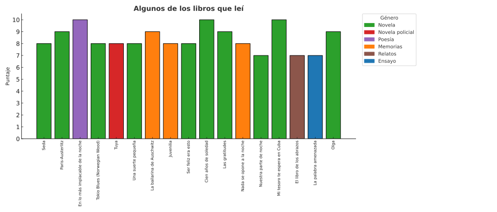

<h2>Visualizaciones</h2>

<div style="display: grid; grid-template-columns: repeat(auto-fit, minmax(320px, 1fr)); gap: 1.5rem; margin: 1rem 0;">
  <figure>
    
    <figcaption>Gráfico de barras: libros leídos y puntajes.</figcaption>
  </figure>
  <figure>
    
    <figcaption>Gráfico de burbujas: autores, géneros y puntajes.</figcaption>
  </figure>
</div>
